CASCO ANTIGUO
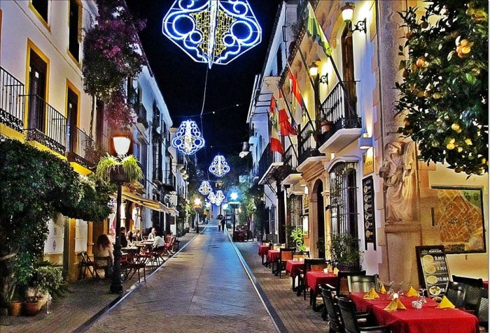
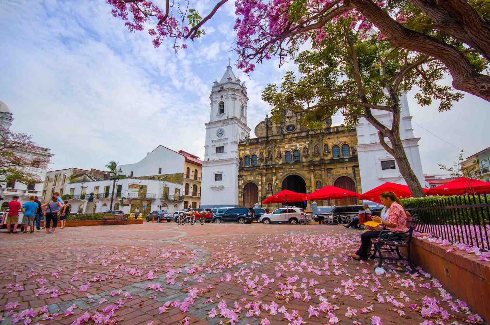
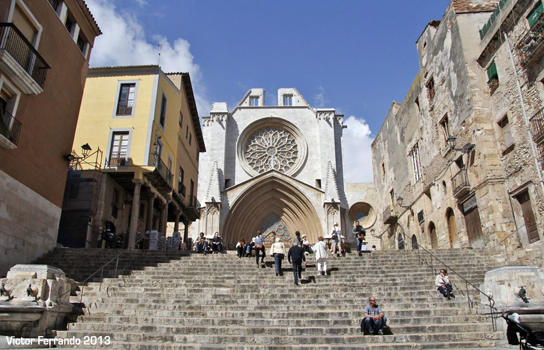
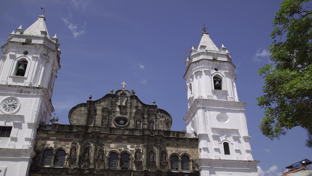

72 - 90 F (22 - 32 C)
What To Do

(Spanish for Old Quarter), also known as Casco Antiguo or San Felipe, is the historic district of Panama City. Completed and settled in 1673, it was built following the near-total destruction of the original city of Panama, Panama Viejo, in 1671, when the latter was attacked by pirates. It was designated a World Heritage Site in 1997. It is the home to the most exciting nightlife in Panama City today. You can find dozens of international food choices here and it is never shy about the nightlife experience it offers. You can find quiet cafes, house music and live bands playing every week here. Wonderful views of Panama City can be had from here. Casco Antiguo is the home of the Presidential Palace and it is a great place to walk around and take pictures.
GAMBOA
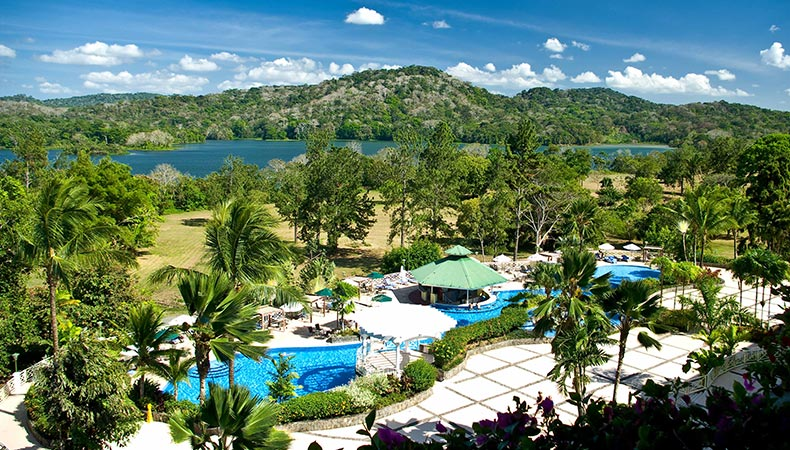
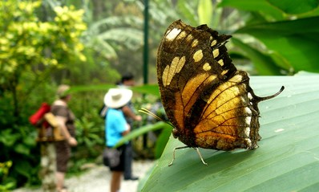
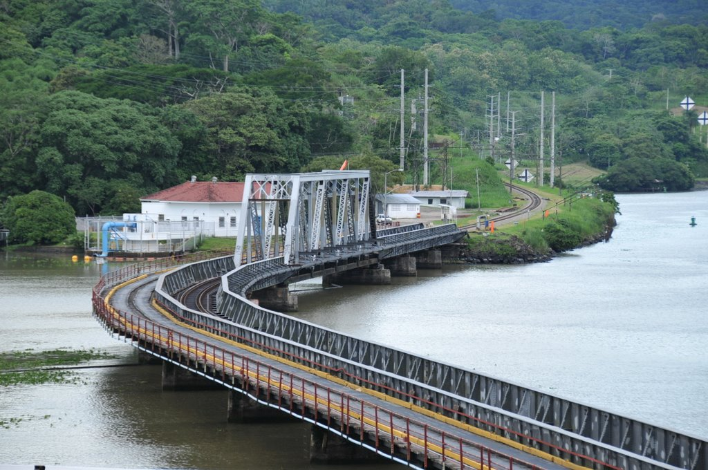
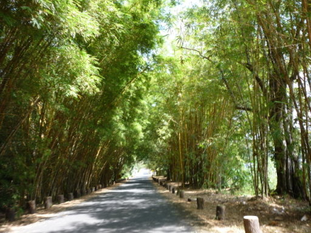
72 - 90 F (22 - 32 C)
What To Do

Due to its location within the Canal Zone, Gamboa is surrounded by an abundance of exuberant vegetation. In this area we can find the Municipal Summit Park, home of the harpy eagle; Soberania National Park, one of the city's largest green areas and home to lush flora and varied fauna (such as caimans, crocodiles and iguanas), as well as the starting point to many outstanding birding trails; centers for those interested in ecotourism; and hotels that invite you to relax in a jungle environment.
CERRO ANCON
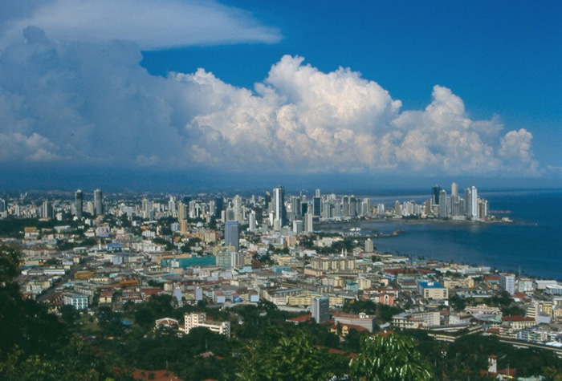
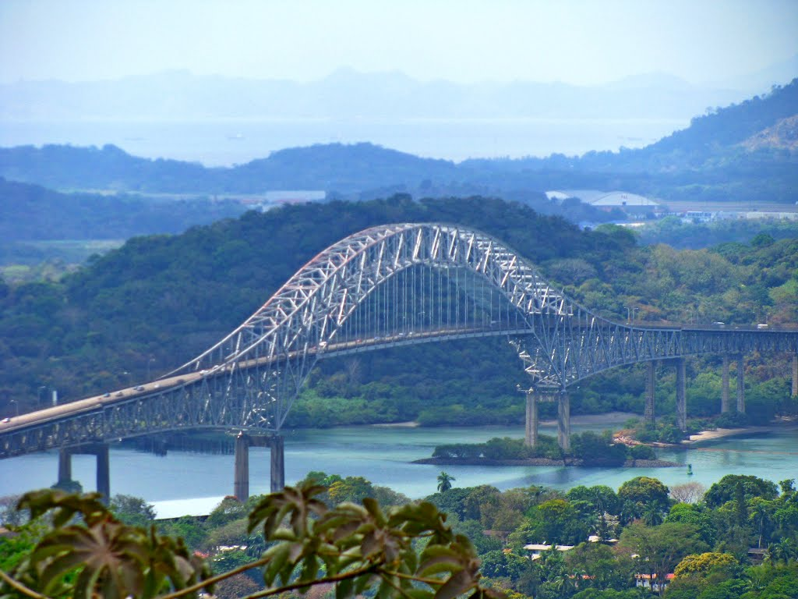
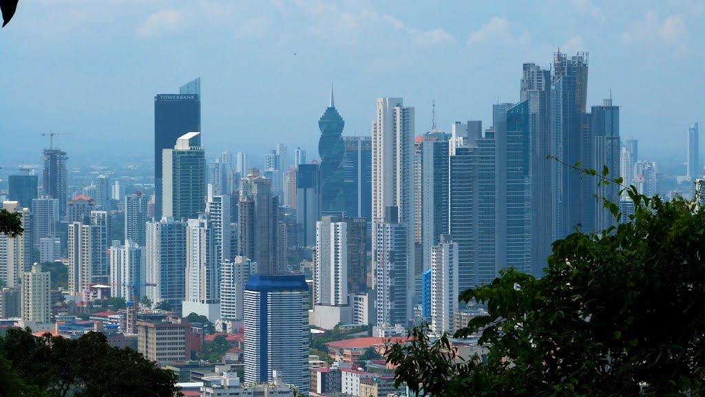
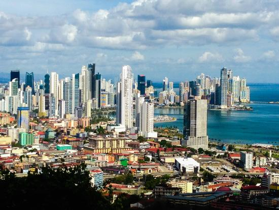
72 - 90F (22 - 32C)
What To Do